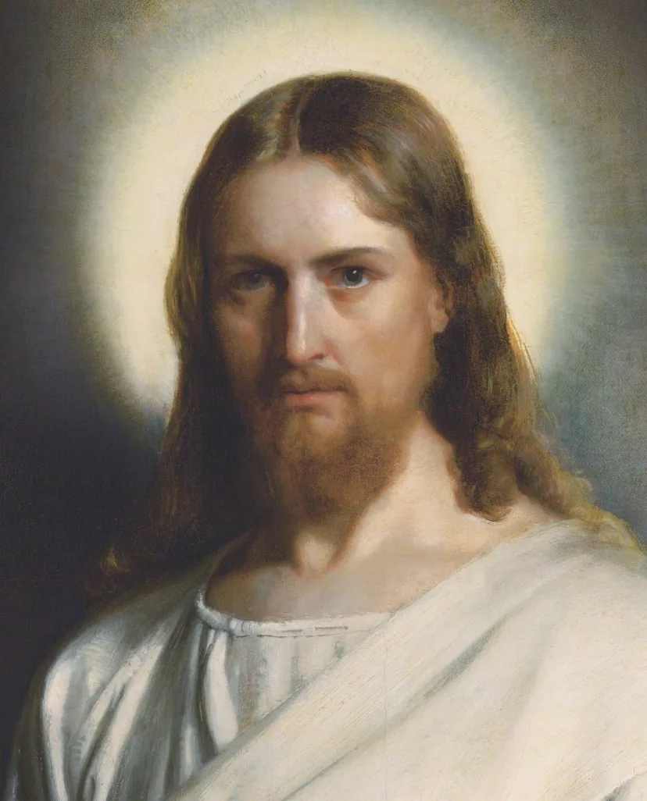
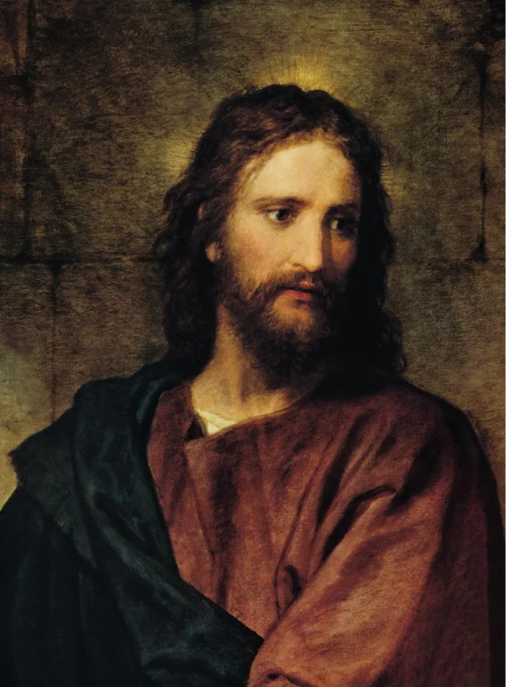
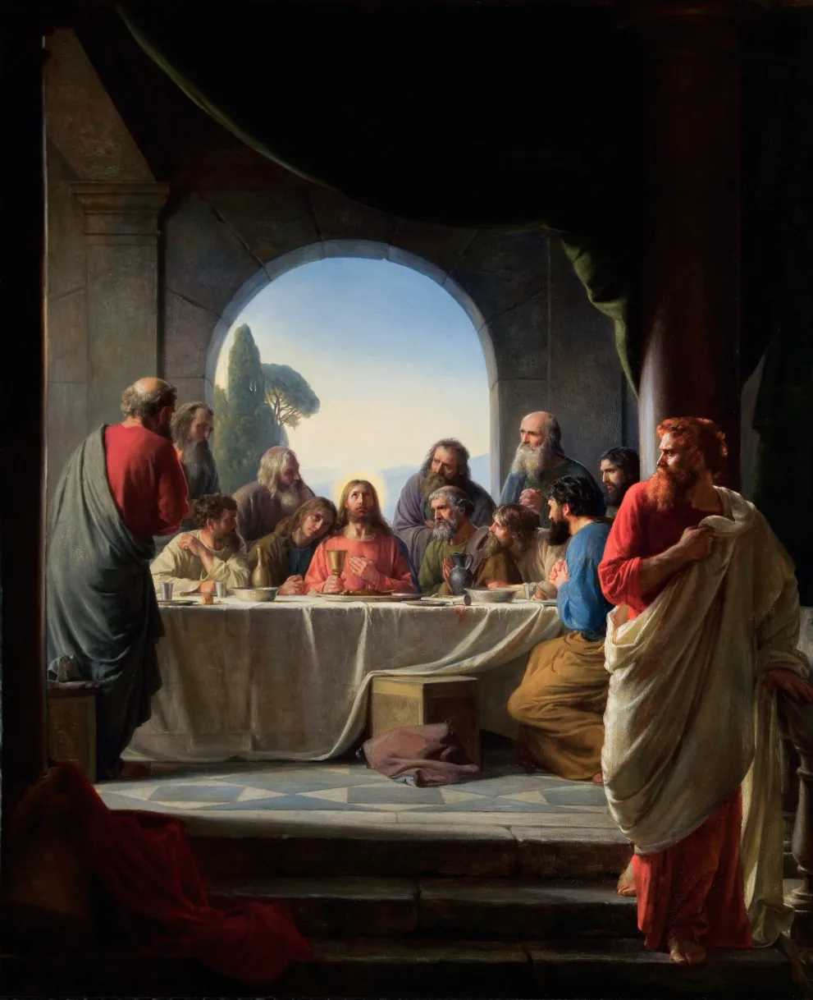
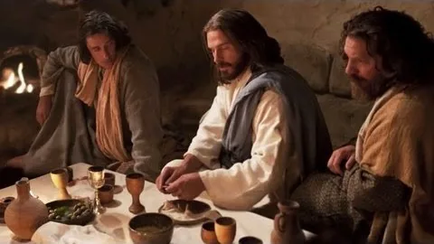
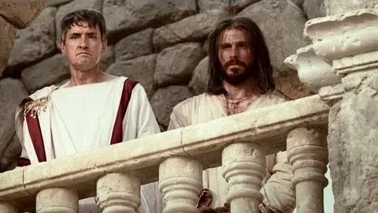
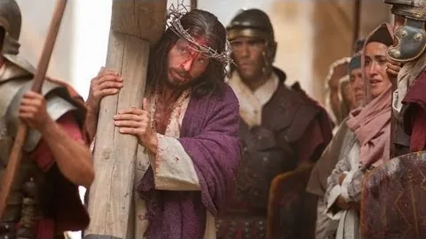
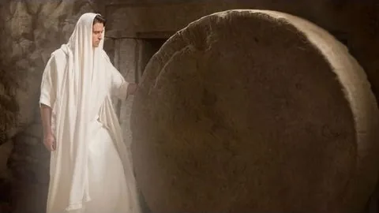
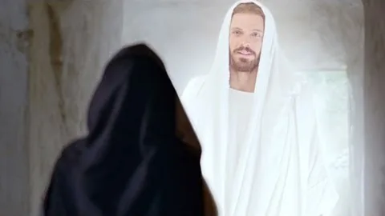

DAY 1 · CLASSROOM LECTURE 2 OF 6
Signs of the kingdom, healing and exorcism, Jesus' identity, conflict, cross and Easter
REL 210 · Chapter 11
Restoration of bodies and sometimes relationships to community.
Deliverance from unclean spirits, portrayed as conflict with the powers of evil.
Storms stilled, food shared, and mastery over danger or scarcity.
Stories of Jairus's daughter and Lazarus point toward life and resurrection.
Historical method can study these narratives and their reception; it does not independently establish supernatural causation.
REL 210 · Chapter 11
Friends lower a paralyzed man through a roof because the house is crowded.
Jesus pronounces forgiveness before telling the man to rise.
Some scribes question who has authority to forgive sins.
The healing becomes a public claim about Jesus' authority.
Watch miracle dramatization (2:57) ↗
Discussion: In this story, why does forgiveness provoke more controversy than healing?
REL 210 · Chapter 11
In a synagogue at Capernaum, Jesus commands an unclean spirit and astonishes onlookers.
Jesus links exorcism with the arrival of God's kingdom.
Ancient Mediterranean communities interpreted some afflictions through spiritual categories that differ from modern medical diagnoses.
What kind of authority do the Gospel writers want their audiences to recognize?
Do not equate ancient possession narratives with present-day mental illness.
REL 210 · Chapter 11
Jesus sleeps through a storm; the disciples fear for their lives.
Jesus rebukes the wind and sea; calm follows.
The disciples ask who he is, since wind and sea obey him.
The Hebrew Bible depicts Israel's God as sovereign over the sea.
A miracle story can function simultaneously as narrative, symbolic teaching, and a claim about identity.
REL 210 · Chapter 11
In Mark 6, five loaves and two fish are shared; the story emphasizes compassion and abundance.
Mark 5 portrays Jesus restoring a child to life.
John 11 uses the raising of Lazarus to reveal Jesus' identity and to accelerate conflict.
Provision, life, and identity meet the claim that God's reign is arriving.
The Gospels vary in their selection and theological presentation of miracle stories.
“But who do you say that I am?”
Mark 8:29 (NRSV)
Christology: the branch of Christian theology relating to the person, nature, and role of Jesus Christ.
The Anointed One.
A spiritual king, from the royal lineage of David.
A spiritual savior, not the political liberator many hoped for: “he will save his people from their sins” (Matt. 1:21).
The Gentile mission carries the Jesus movement beyond Jewish communal boundaries.

Devotional portrait of Christ (19th-century style); image from the original deck
Central to Christianity is the divine sonship of Christ.
The angel said to her, “The Holy Spirit will come upon you, and the power of the Most High will overshadow you; therefore the child to be born will be holy; he will be called Son of God.”
Luke 1:35 (NRSV)

Portrait of Christ in the style of Heinrich Hofmann (19th century); image from the original deck
In John’s Gospel, Jesus speaks of himself in words that echo God’s name revealed to Moses.
Jesus said to them, “Very truly, I tell you, before Abraham was, I am.”
John 8:58 (NRSV)
Christians read this as a claim to be the God of Abraham, Isaac, and Jacob; the crowd’s angry reaction (John 8:59) shows they heard it as one.
Modern devotional painting, “I Am” style (image from the original deck; artist’s courtesy watermark visible)
REL 210 · Chapter 11
In biblical Hebrew or Aramaic, 'son of man' can mean a human being.
A figure 'like a son of man' receives dominion in a vision of judgment and vindication.
Jesus speaks of the Son of Man's ministry, suffering, and future coming.
How each saying relates to Jesus' own historical self-understanding remains contested.
Do not collapse Son of Man, Messiah, and Son of God into interchangeable first-century titles.
REL 210 · Chapter 11
Pilgrims gathered amid hopes rooted in Israel's liberation story.
In Mark 11, Jesus disrupts commerce in the Temple precincts and cites prophetic scripture.
Some Jerusalem leaders question his authority and growing public influence.
An arrest and Roman crucifixion place the final crisis under imperial power.
The Temple action should be situated in Jewish prophetic criticism, not portrayed as a rejection of Judaism itself.

The Last Supper, Carl Bloch (1876), public domain; image from the original deck
From Latin passio, “suffering.” Christians use it for the suffering and death of Jesus, from Gethsemane to the cross.
At supper Jesus wraps a towel around his waist and washes his disciples’ feet, a servant’s job. Then he gives them a new commandment: love one another as I have loved you.

Still from the Bible Videos clip The Last Supper | John 13 (The Church of Jesus Christ of Latter-day Saints)
The Roman governor Pontius Pilate questions Jesus, offers to release a prisoner, and gives way to the crowd. He washes his hands: “I am innocent of this man’s blood” (Matt 27:24).

Still from the Bible Videos clip Matthew 27 | Jesus Is Condemned Before Pilate | The Bible (The Church of Jesus Christ of Latter-day Saints)
Roman soldiers flog Jesus, mock him with a crown of thorns, and lead him out to Golgotha. He is crucified between two men. Mark records his cry: “My God, my God, why have you forsaken me?” (Mark 15:34).

Still from the Bible Videos clip Jesus Is Scourged and Crucified | Matthew 27 (The Church of Jesus Christ of Latter-day Saints)
That evening a rich disciple, Joseph of Arimathea, asks for the body, wraps it, and lays it in his own new tomb cut in the rock. He rolls a great stone across the door.

Still from the Bible Videos clip Matthew 27 | Jesus Is Laid in a Tomb | The Bible (The Church of Jesus Christ of Latter-day Saints)
Early on Sunday, Mary Magdalene finds the stone moved. Weeping in the garden, she mistakes Jesus for the gardener, until he says her name: “Mary!” She runs to tell the others, “I have seen the Lord” (John 20:16–18).

Still from the Bible Videos clip John 20 | Jesus Is Resurrected | The Bible (The Church of Jesus Christ of Latter-day Saints)
Acts says the risen Jesus appeared to his followers “during forty days,” then left them on the Mount of Olives.
When he had said this, as they were watching, he was lifted up, and a cloud took him out of their sight.
Acts 1:9 (NRSV)
Christians believe that God raised Jesus from the dead and that he ascended to the Father.
REL 210 · Chapter 11
Jesus was executed under Pontius Pilate; his followers continued after his death.
The earliest communities proclaimed that God had raised Jesus from the dead.
The cross, resurrection, and inherited Jewish scriptures reshaped the community's understanding of Jesus.
How did a movement within Judaism become a far-reaching missionary Church?
Lecture 3 starts with Pentecost, Jerusalem, and the Gentile mission.
LECTURE 2 · PIERIAN SPRING
The 35-minute classroom lecture ends here. All following slides are assigned independent study for Lecture 2: Miracles, Identity, Passion and Resurrection.
Doctrine
Debates about Mary were also debates about who Jesus is
Theotokos, “God-bearer,” protects the claim that the one born of Mary is truly divine.
Jesus Christ is one person in two natures, fully divine and fully human, without confusion or separation.
Catholics and Orthodox venerate Mary strongly; Protestants generally honor her biblical role with less devotional emphasis.
The Immaculate Conception concerns Mary’s conception without original sin; it is not another name for Jesus’s virgin conception.
PIERIAN SPRING · REQUIRED INDEPENDENT STUDY
Mark 2:1–12 joins healing to a dispute about forgiveness and authority.
Matthew places healings near Jesus' teachings and repeatedly emphasizes compassion and fulfilled Scripture.
Luke highlights healing, inclusion, and the activity of the Spirit in Jesus' ministry.
John calls particular miracles 'signs' that disclose Jesus' identity and invite belief.
Compare how each author uses a miracle story to communicate a theological argument.
PIERIAN SPRING · REQUIRED INDEPENDENT STUDY
The Son of Man 'must undergo great suffering,' a sharp turn after Peter's confession.
The Son of Man comes to serve, and the verse interprets Jesus' impending death.
A humanlike figure receives authority in a visionary scene, a background for later interpretation.
Why does a suffering Messiah challenge expectations of power and victory?
Identity claims in the Gospels cannot be separated from their portrayals of suffering.
PIERIAN SPRING · REQUIRED INDEPENDENT STUDY
In the earliest recoverable ending of Mark, women discover the empty tomb and flee in fear.
An angel and resurrection appearances accompany a commissioning scene in Galilee.
Narratives of the road to Emmaus and Jerusalem emphasize recognition and interpretation of Scripture.
Mary Magdalene, Thomas, and others appear in distinctive recognition and encounter narratives.
Academic comparison: identify shared convictions and differing narrative details without forcing one synthetic account.
PIERIAN SPRING · REQUIRED INDEPENDENT STUDY
Why does the healing in Mark 2 trigger controversy over forgiveness?
How does a Johannine sign differ in presentation from a Synoptic healing story?
How are Son of Man, Messiah, Son of God, and 'I AM' used differently?
Which historical conclusions and which claims of Christian faith should be distinguished?
Study check: explain the examples, not only the terminology. Return to earlier slides when needed.
→ / Space: Next slide
← : Previous slide
Tab / Shift+Tab: Move between pop-up terms and links
Enter / Space on a dotted term: Open its pop-up
S: Speaker notes
F: Fullscreen
O: Overview
ESC: Close an open pop-up (otherwise toggles the overview)